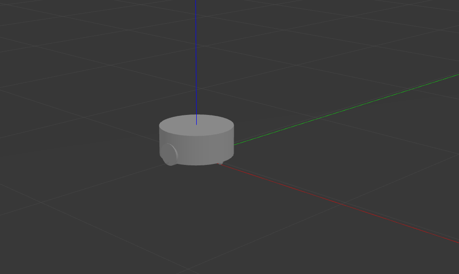
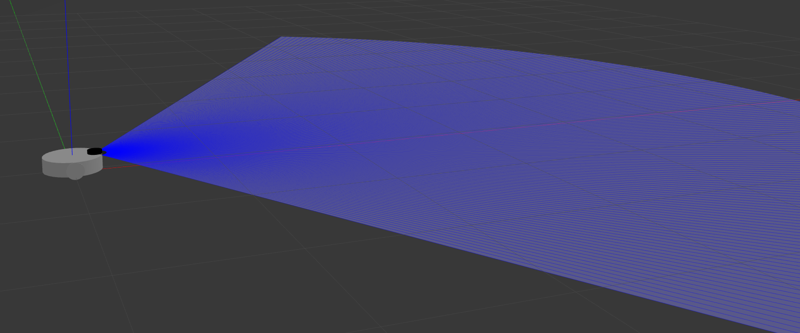
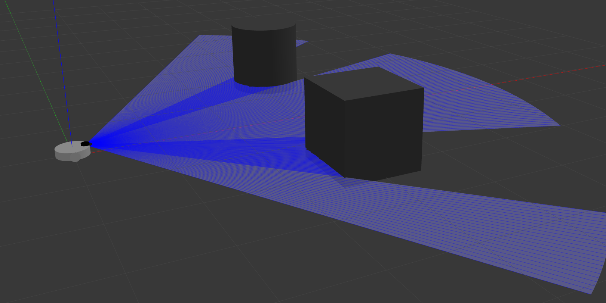
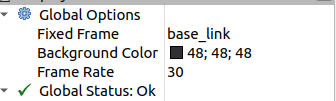
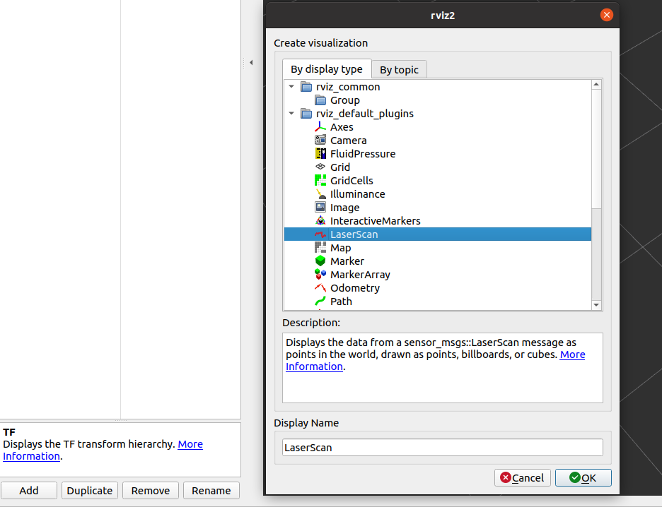
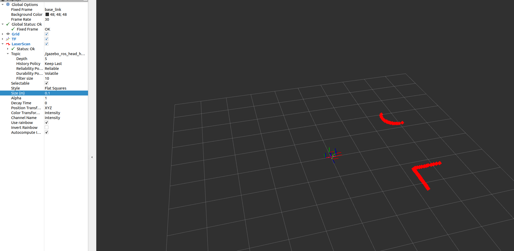
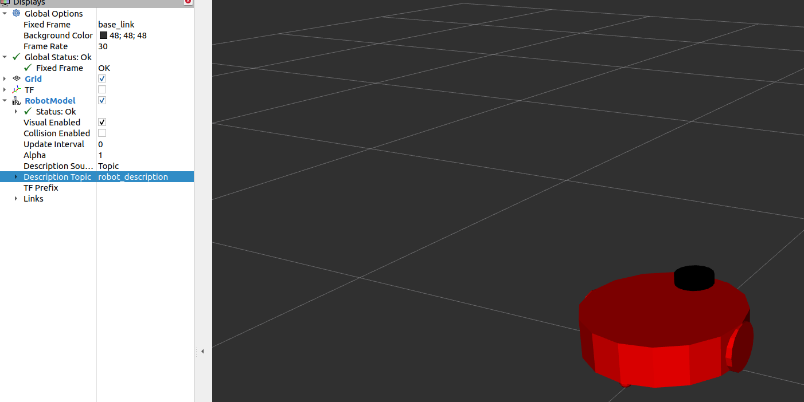
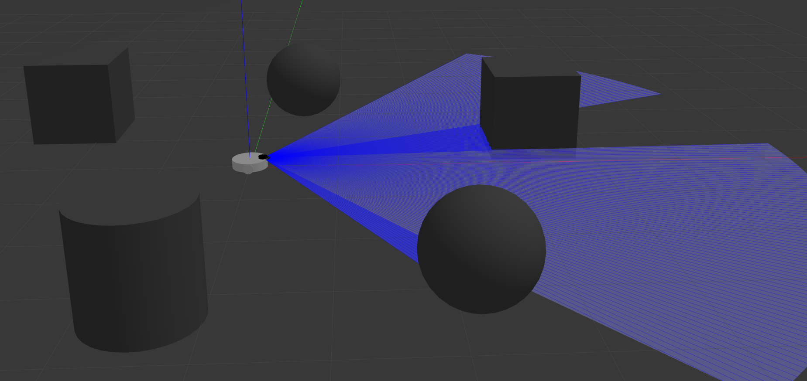
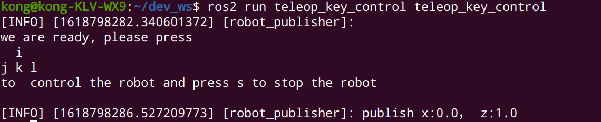
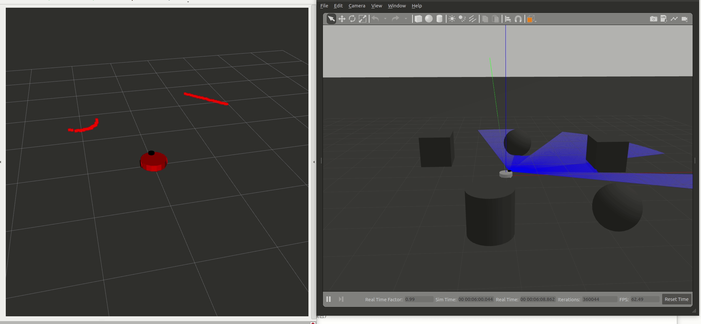

到此，我们可以使用自己写的ros2节点来控制显示在gazebo中，用xacro文件描述的机器人
为了让xacro文件看起来更有结构性，我们考虑把机器人的整个底座当做是一个宏，给别的文件调用，把传感器也可以作为一个宏给他人调用，如此就会有较为清晰的代码结构
调整xacro文件结构
定义宏
把我们之前的my_robot.xacro改名为my_robot_base.xacro，并且在我们定义<link name="base_link">之前，以及</plugin></gazbeo>之后添加宏定义描述，即
1
2
3
4
5
6
7
8
9
10
11
12
13
14
| <xacro:macro name="my_robot_base">
<link name="base_link">
...
</link>
<xacro:wheel prefix="left" reflect="-1"/>
<xacro:wheel prefix="right" reflect="1"/>
<xacro:caster prefix="front" reflect="-1"/>
<xacro:caster prefix="back" reflect="1"/>
<gazebo>
<plugin>
...
</plugin>
</gazebo>
</xacro:macro>
|
如此我们便将之前的一整个机器人定义为一个宏文件，名字为my_robot_base
文件宏调用
新建一个文件名为my_robot.xacro，用于导入宏my_robot_base，这样我们也可以达到和之前一样的效果
1
2
3
4
5
6
7
| <?xml version="1.0"?>
<robot name="mbot" xmlns:xacro="http://www.ros.org/wiki/xacro">
<xacro:include filename="$(find robot_description)/my_robot_base.xacro" />
<xacro:my_robot_base/>
</robot>
|
我们使用了<xacro:include filename=...>来导入一个文件，find后面跟上我们的包名，下面一行表示调用文件中的宏，就是我们所定义的机器人
编译运行
1
2
3
| cd ~/dev_ws
colcon build --packages-select robot_description
ros2 launch robot_description gazebo_empty_world.launch.py
|
可以看见在gazebo的场景中间出现一个和之前一模一样的机器人

添加传感器
修改my_robot.xacro
根据现在的文件结构模式，我们期望再导入一个xacro，直接调用里面的宏就可以加入一个传感器，即
1
2
3
4
5
6
7
8
9
10
11
12
13
14
15
16
| <?xml version="1.0"?>
<robot name="mbot" xmlns:xacro="http://www.ros.org/wiki/xacro">
<xacro:include filename="$(find robot_description)/my_robot_base.xacro" />
<xacro:my_robot_base/>
<xacro:include filename="$(find robot_description)/my_robot_lidar.xacro" />
<xacro:my_robot_lidar/>
<joint name="lidar_joint" type="fixed">
<origin xyz="${base_radius-lidar_radius} 0 ${base_length+wheel_radius/3}" rpy="0 0 0" />
<parent link="base_link" />
<child link="lidar_link" />
</joint>
</robot>
|
因为在文件my_robot_lidar.xacro中是不会有机器人的标签属性，因此将雷达和机器人的属性全部导入之后，在这里添加雷达传感器和机器人的一个joint关系，下面开始定义雷达传感器的xacro文件
定义传感器
下面定义关于雷达的xacro描述文件, 我们将其放入一个名为sensors的文件夹中
1
2
3
| cd ~dev_ws/src/robot_description/urdf
mkdir sensors
vi my_robot_lidar.xacro
|
文件内容的结构和之前的xacro文件是一致的，全部内容如下。参考github ros1 2 ros2 以及 gazebo介绍
1
2
3
4
5
6
7
8
9
10
11
12
13
14
15
16
17
18
19
20
21
22
23
24
25
26
27
28
29
30
31
32
33
34
35
36
37
38
39
40
41
42
43
44
45
46
47
48
49
50
51
52
53
54
55
56
57
58
59
60
61
62
63
64
65
66
67
68
69
70
71
72
73
74
75
76
77
78
| <?xml version="1.0"?>
<robot xmlns:xacro="http://www.ros.org/wiki/xacro" name="laser">
<xacro:property name="lidar_radius" value="0.05"/>
<xacro:property name="lidar_length" value="0.05"/>
<xacro:macro name="lidar" params="prefix:=lidar">
<link name="${prefix}_link">
<inertial>
<mass value="0.1" />
<origin xyz="0 0 0" />
<inertia ixx="0.01" ixy="0.0" ixz="0.0"
iyy="0.01" iyz="0.0"
izz="0.01" />
</inertial>
<visual>
<origin xyz=" 0 0 0 " rpy="0 0 0" />
<geometry>
<cylinder length="${lidar_length}" radius="${lidar_radius}"/>
</geometry>
<material name="black"/>
</visual>
<collision>
<origin xyz="0.0 0.0 0.0" rpy="0 0 0" />
<geometry>
<cylinder length="${lidar_length}" radius="${lidar_radius}"/>
</geometry>
</collision>
</link>
<gazebo reference="${prefix}_link">
<material>Gazebo/Black</material>
</gazebo>
<gazebo reference="${prefix}_link">
<sensor type="ray" name="head_hokuyo_sensor">
<visualize>true</visualize>
<update_rate>10</update_rate>
<ray>
<scan>
<horizontal>
<samples>180</samples>
<resolution>1</resolution>
<min_angle>-1.046666667</min_angle>
<max_angle>1.04666667</max_angle>
</horizontal>
</scan>
<range>
<min>0.08</min>
<max>6.0</max>
<resolution>0.05</resolution>
</range>
<noise>
<type>gaussian</type>
<mean>0.0</mean>
<stddev>0.01</stddev>
</noise>
</ray>
<plugin name="gazebo_ros_head_hokuyo_controlle" filename="libgazebo_ros_ray_sensor.so" >
<ros>
<namespace>/</namespace>
<argument>--ros-args --remap ~/scan:=scan</argument>
</ros>
<output_type>sensor_msgs/LaserScan</output_type>
</plugin>
</sensor>
</gazebo>
</xacro:macro>
</robot>
|
激光传感器的类型是ray, 采样前方120度检测范围，一共采样180个点，10Hz采样频率，并添加了高斯噪声。
在插件中，我们定义了雷达发布的topic 为 /scan。为了提供这插件的不同输出，添加了一个参数来设置插件发布的消息类型。output_type可选的参数有
sensor_msgs/PointCloud2: 3D cloud of points (default)sensor_msgs/PointCloud: 3D cloud of pointssensor_msgs/LaserScan: 2D scan sensor_msgs/Range: 单一的距离值
修改setup.py
我们需要把sensors文件夹下的内容，一起加入编译，打开setup.py
1
2
| cd ~/dev_ws/src/robot_description
vi setup.py
|
在data_files的列表里添加最后一项
1
2
3
4
5
6
7
8
| data_files=[
('share/ament_index/resource_index/packages',
['resource/' + package_name]),
('share/' + package_name, ['package.xml']),
('share/' + package_name, glob('launch/*.launch.py')),
('share/' + package_name, glob('urdf/*.xacro')),
('share/' + package_name, glob('urdf/sensors/*.xacro')),
],
|
这样，在colcon build的时候可以把sensors文件夹加里面的.xacro文件编译到~/dec_ws/install/robot_description/share/robot_description/中
编译运行
编译一下我们刚才添加的传感器，别忘记source 工作空间dev_wc的bash
1
2
| cd ~/dev_ws
colcon build --packages-select robot_description --symlink-install
|
运行节点
1
| ros2 launch robot_description gazebo_empty_world.launch.py
|
在启动的gazebo场景中，我们应该可以看见

打开另外一个终端，可以查看topic信息
返回
1
2
3
4
5
6
7
8
9
10
11
| /clock [rosgraph_msgs/msg/Clock]
/cmd_vel [geometry_msgs/msg/Twist]
/gazebo_ros_head_hokuyo_controlle/out [sensor_msgs/msg/LaserScan]
/joint_states [sensor_msgs/msg/JointState]
/odom [nav_msgs/msg/Odometry]
/parameter_events [rcl_interfaces/msg/ParameterEvent]
/performance_metrics [gazebo_msgs/msg/PerformanceMetrics]
/robot_description [std_msgs/msg/String]
/rosout [rcl_interfaces/msg/Log]
/tf [tf2_msgs/msg/TFMessage]
/tf_static [tf2_msgs/msg/TFMessage]
|
可以看见，会有一个雷达扫描的topic
1
| /gazebo_ros_head_hokuyo_controlle/out [sensor_msgs/msg/LaserScan]
|
rviz数据显示
到目前，我们可以通过gazebo把仿真的数据通过topic的形式进行发布，下面将其发布的雷达数据进行可视化。
gazebo显示
1
2
3
| cd ~/dev_ws
source install/local_setup.bash
ros2 launch robot_description gazebo_empty_world.launch.py
|
为了显示雷达的数据信息，我们通过场景中上方的工具栏随意添加几个物体

rviz显示
打开另外一个终端
在左上方display选项卡中，找到Global Options，将里面的Fix Frame选择为base link

在此选项卡的左下角，点击Add按钮，在弹出的新窗口中选择LaserScan，点击OK

此时在Displays下面会出现一个红色的LaserScan，点击LaserScan，把他订阅的topic改为我们之前通过gazebo发布的/gazebo_ros_head_hokuyo_controlle/out，为了使雷达数据更为明显，调整size为0.1

为了让机器人在rviz中显示，点击左下角的Add，点击RobotModel， 并设置RobotModel下的Description Topic为robot_description

则应该看到一个机器人显示在Rviz中（无颜色）
设置rviz
为了避免每一次进入rviz 都要重新点add键，我们可以在rviz的左上角file -> save Config as将其保存在项目的rviz文件夹下，名为rviz.rviz下一次启动可以直接调用此配置文件，首先进入配置文件夹，然后启动
移动机器人
我们首先在gazebo中添加一些物体在机器人的周围

在rviz中点击Add按钮添加LaserScan，并调整size
新开一个终端，打开我们之前写的键盘控制节点，让机器人旋转
1
2
| cd ~/dev_ws
source /install/local_setup.bash
|

机器人在gazebo中会原地旋转，同时扫描周围的物体，同时在rviz中，我们也应该看到雷达数据的实时更新

但是我们会发现一个问题，在gazebo中，是我们所预期的，机器人在转动，但是在rviz中，缺是物体在转动。这是因为我们选择了机器人本身的base_link作为固定的坐标系而导致的，这时我们需要修改固定的坐标系为odom。世界坐标系即可